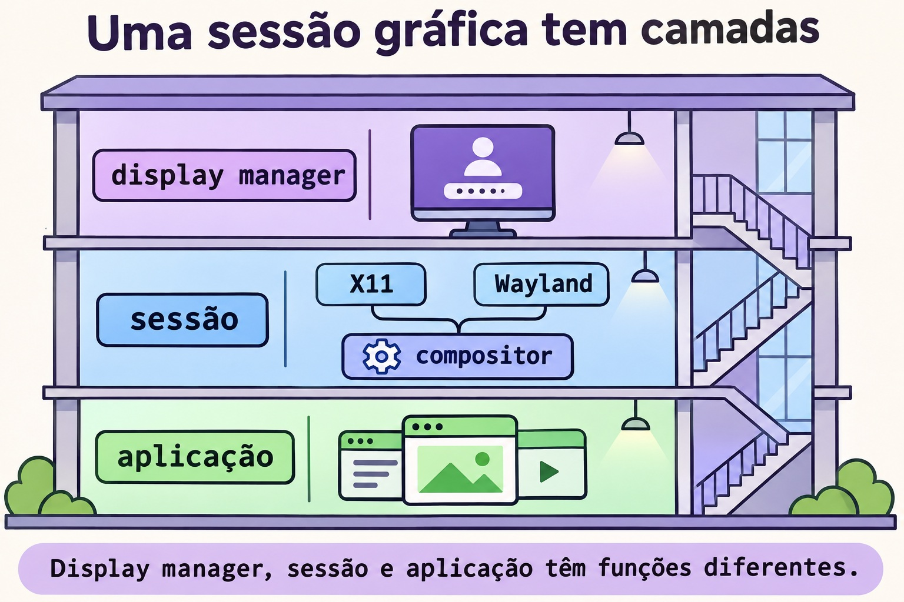
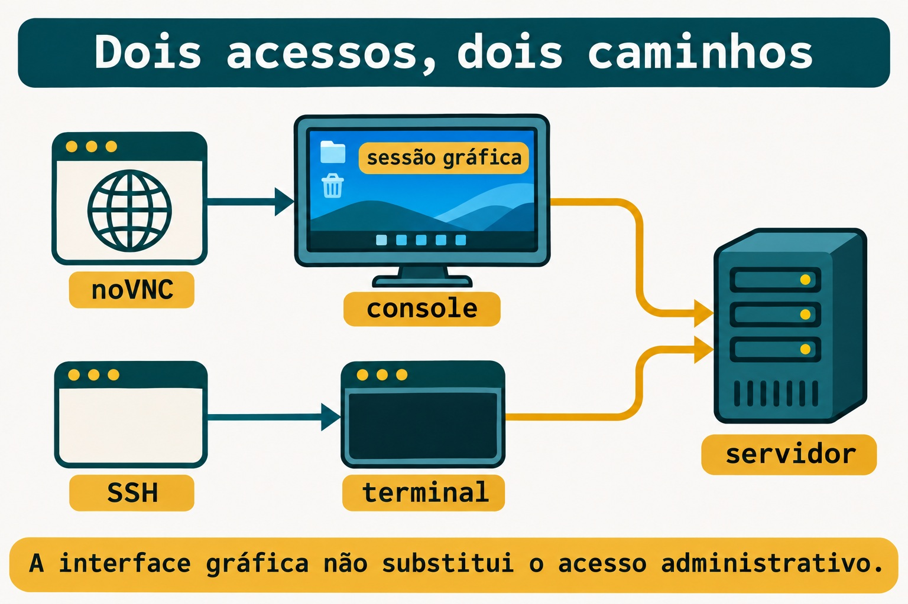
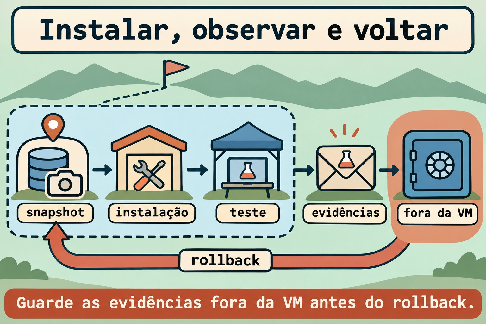

Aula 15.4 · Interfaces gráficas
Um servidor pode oferecer interface gráfica sem que ela se torne requisito para administrar o sistema. Você vai observar GNOME, display manager, X11, Wayland e acessibilidade no console da VM. A instalação será temporária: as evidências saem da VM antes do rollback.
Núcleo desta aula: display manager inicia o acesso gráfico; a sessão possui sua arquitetura; SSH continua sendo um caminho independente. Instale para estudar, registre e volte pelo snapshot. O resto é aprofundamento.
| Ficha | |
|---|---|
| Módulo | M15 · Shell e ambiente, aula 4 de 5 |
| Quando | Semana 21 |
| Ao final | Você identifica as camadas da sessão gráfica e recupera a base do servidor |
| Pré-requisitos | Proxmox, snapshots, SSH, noVNC e recursos livres para uma VM de exercício |
| Tempo | Cerca de 90 minutos, mais downloads e a repetição na outra distro |
| Snapshots | m15a4-inicio e m15a4-fim nas VMs 201 e 202 |
1 · Aquecimento
- Qual é a diferença entre iniciar uma unidade agora e mudar o target padrão para o próximo boot?
- Por que uma aplicação iniciada por uma sessão gráfica pode ter ambiente diferente do SSH?
- Que alterações um rollback descarta dentro da VM?
2 · Por que importa
O console gráfico não aparece, mas SSH responde. Reiniciar tudo misturaria duas situações diferentes: o servidor continua operando e o caminho gráfico falhou. Você vai aprender a identificar a unidade, a sessão e a arquitetura antes de trocar configurações.
Acessibilidade também faz parte da administração. Uma sessão precisa permitir leitura, navegação e entrada ao usuário, sem depender apenas de aparência ou de um dispositivo de apontamento.
3 · Modelo mental
O display manager é o balcão de entrada do prédio. O desktop organiza a sala de trabalho. O protocolo gráfico e o compositor participam de como janelas e dispositivos são apresentados. Um terminal é apenas uma aplicação dessa sala.
console -> display manager -> sessão gráfica -> aplicações
SSH -----------------------> shell remoto

Ponte Windows
| Windows Server | Linux | Separação útil |
|---|---|---|
| Console da VM | noVNC do Proxmox | Mostra o console virtual |
| Ambiente de desktop | GNOME e outros desktops | Organiza a sessão do usuário |
| Administração remota por terminal | SSH | Não exige desktop instalado |
4 · O essencial
Display manager e sessão
GDM apresenta o login gráfico e inicia uma sessão escolhida. GNOME fornece o ambiente de trabalho. Uma aplicação gráfica pode usar X11 ou Wayland; uma sessão Wayland também pode executar aplicações X11 por Xwayland.
Não conclua que a sessão é X11 apenas porque existe DISPLAY. Verifique o tipo da sessão gráfica no loginctl ou no ambiente do terminal aberto dentro dela.
Console não é protocolo remoto de desktop
O noVNC mostra a tela virtual da VM. Esta aula não instala RDP, VNC dentro do convidado ou um serviço gráfico exposto à rede. O SSH existente continua sendo o canal administrativo de recuperação.


Recursos e reversibilidade
As VMs do curso começaram com 2 GB de RAM. Para este lab, exija 4 GB de RAM estável para a VM em teste, pelo menos 10 GB livres na raiz antes de planejar a instalação e espaço suficiente no storage para o snapshot. Confira a estimativa do gerenciador de pacotes: esses valores são uma margem do exercício, não garantia para qualquer desktop.
Faça uma VM por vez. Se o host não puder fornecer essa margem, não inicie a instalação. Não aumente recursos de outras VMs e não altere o cluster para satisfazer o lab.
Rocky × Debian
| Item | Rocky 9 | Debian 13 |
|---|---|---|
| Desktop escolhido | Ambiente Server with GUI | Pacotes gnome-core e gdm3 |
| Display manager | gdm.service | gdm3.service |
| Caminho gráfico | Conferir a sessão disponível no GDM | Conferir a sessão disponível no GDM |
| Retorno da instalação | Rollback do snapshot inicial | Rollback do snapshot inicial |
5 · Lab guiado
Leia o procedimento inteiro antes de instalar. A pasta de evidências dentro da VM desaparecerá no rollback; você a copiará para o Windows antes de voltar.
Passo 1 · Registrar a base e o limite de recursos
Palpite: um snapshot guardado no mesmo storage dispensa espaço livre ou backup?
No host Proxmox, leia a configuração e os recursos. Registre memória, balloon e storage num diário fora das VMs.
qm config 201
qm config 202
free -h
pvesm status
qm snapshot 201 m15a4-inicio
qm snapshot 202 m15a4-inicioNas duas VMs, crie a pasta somente se não existia.
test ! -e "$HOME/m15a4"
mkdir -m 700 "$HOME/m15a4"
systemctl get-default > "$HOME/m15a4/target.inicio"
free -h
df -h /Saída esperada: snapshots disponíveis e base registrada. Se a margem de RAM ou disco não existir, pare o lab antes de instalar.
Verifique: confirme noVNC, SSH novo e o snapshot de cada ID com qm listsnapshot 201 e qm listsnapshot 202.
Passo 2 · Instalar numa VM de cada vez
Palpite: alocar mais RAM na configuração prova que o host tem essa RAM realmente disponível?
Comece pela Rocky. Se ela ainda tem 2 GB, desligue apenas a VM 201 de forma limpa, confirme stopped e, somente após conferir capacidade no host, configure a margem do lab.
qm shutdown 201 --timeout 120
qm status 201
qm set 201 --memory 4096 --balloon 0
qm start 201Na Rocky, confira a estimativa antes de aceitar a instalação.
sudo env LC_ALL=C dnf group info 'Server with GUI'
sudo env LC_ALL=C dnf --assumeno group install 'Server with GUI'
sudo env LC_ALL=C dnf group install 'Server with GUI'
sudo dnf install orcaDepois de terminar todo o roteiro e fazer rollback da Rocky, repita na Debian. Se necessário, use o mesmo ajuste de memória somente no ID 202, com a VM parada e a capacidade novamente conferida.
sudo apt update
sudo apt-get -s install gnome-core gdm3 orca
sudo apt install -y gnome-core gdm3 orcaSaída esperada: instalação concluída sem esgotar a raiz ou a RAM do host. Na Debian, escolha GDM caso apareça uma seleção de display manager.
Verifique: confira a unidade real com systemctl cat gdm.service na Rocky ou systemctl cat gdm3.service na Debian. Não presuma o protocolo da sessão a partir do pacote instalado.
Passo 3 · Abrir a sessão gráfica
Palpite: iniciar o display manager precisa encerrar a sessão SSH existente?
Na VM em teste, indique o target do próximo boot e inicie o caminho gráfico. Não use isolamento de target para este exercício.
Na Rocky, execute sudo systemctl enable gdm.service para criar o alias de entrada do display manager. No Debian, a seleção de GDM na instalação deve ter criado esse vínculo; confirme com systemctl cat display-manager.service. Se estiver ausente, execute sudo dpkg-reconfigure gdm3, selecione GDM e confirme de novo antes de continuar.
sudo systemctl set-default graphical.target
sudo systemctl start display-manager.service
systemctl status display-manager.serviceEntre como student pelo noVNC. Se houver seleção de sessão no GDM, leia as opções oferecidas; não force X11 ou Wayland editando arquivos para imitar outra distro.
Saída esperada: sessão de desktop no console e SSH ainda funcional.
Verifique: abra um terminal dentro do desktop e compare seu ambiente com o terminal SSH, sem misturar os dois.
Decida 1
O console gráfico falhou, mas SSH responde. Qual investigação mantém as camadas separadas?
| Opção | Ação |
|---|---|
| A | Reiniciar o host Proxmox |
| B | Alterar a rede do servidor |
| C | Conferir display manager, journal e sessões da VM |
Escolha C. O caminho administrativo já mostrou que o sistema ainda responde.
Passo 4 · Identificar a arquitetura observada
Palpite: ver DISPLAY num terminal prova que a sessão inteira usa X11?
No terminal aberto dentro da sessão gráfica:
printf 'type=%s\n' "${XDG_SESSION_TYPE-unset}"
printf 'display=%s\n' "${DISPLAY-unset}"
printf 'wayland=%s\n' "${WAYLAND_DISPLAY-unset}"
loginctl list-sessionsIdentifique a sessão de student que pertence ao console gráfico. Use seu ID real na consulta abaixo, digitando-o quando solicitado.
read -r -p 'SESSION_ID: ' SESSION_ID
loginctl show-session "$SESSION_ID" -p Name -p Type -p Remote -p StateSaída esperada: tipo realmente observado, como wayland ou x11. O terminal SSH corresponde a outra sessão, normalmente de terminal.
Verifique: explique por que uma aplicação X11 por Xwayland pode produzir DISPLAY dentro de uma sessão Wayland.
Passo 5 · Conferir acessibilidade
Palpite: uma sessão utilizável depende apenas de resolução e tema?
No desktop, abra as configurações de acessibilidade. Observe tamanho de texto, contraste, ampliação, teclado de tela e leitor de tela. Mude uma opção por vez e anote como voltar ao valor anterior.
No terminal gráfico, confira se a preferência do leitor está habilitada.
gsettings get org.gnome.desktop.a11y.applications screen-reader-enabledSaída esperada: a interface oferece as opções instaladas. O leitor de tela precisa também de saída de áudio funcional; um console virtual sem áudio não demonstra que a fala chegou ao usuário.
Verifique: navegue por um aplicativo usando teclado e restaure as opções testadas. Registre o que foi observado e o que não pôde ser comprovado no console.
Decida 2
O teste gráfico terminou. Qual sequência protege os registros da aula?
| Opção | Sequência |
|---|---|
| A | Copiar as evidências para fora, conferir a cópia e fazer rollback |
| B | Deixar a instalação sem registrar a mudança |
| C | Rollback e depois procurar o relatório dentro da VM |
Escolha A. O rollback descarta a pasta criada depois do snapshot.
Passo 6 · Registrar e preparar o retorno
Palpite: salvar o arquivo dentro da VM é suficiente para sobreviver ao rollback?
Na VM, registre target e sessões, sem guardar conteúdo privado das aplicações.
{
printf 'initial_target='; cat "$HOME/m15a4/target.inicio"
printf 'current_target='
systemctl get-default
systemctl is-active display-manager.service
loginctl list-sessions
free -h
df -h /
} > "$HOME/m15a4/evidencias.txt"No Windows, crie uma pasta local para a aula. Dentro dela, copie o arquivo da VM em teste. Use o segundo comando só quando repetir o roteiro na Debian.
scp rocky-lab:m15a4/evidencias.txt evidencias-rocky.txt
scp debian-lab:m15a4/evidencias.txt evidencias-debian.txtSaída esperada: cópia legível fora da VM. O bloco usa o cliente OpenSSH já configurado no Windows; não o execute dentro da outra VM.
Verifique: abra a cópia no Windows antes do rollback. Atualize-a depois das quebras abaixo para conservar também seus resultados.
6 · Quebre e conserte
Quebra 1 · Display manager parado
Pelo SSH da VM em teste, pare apenas o display manager. Isso encerra a sessão gráfica, não o host.
sudo systemctl stop display-manager.service
systemctl is-active display-manager.serviceSintoma: o desktop deixa de aparecer no console; SSH continua respondendo.
Investigação: consulte o estado e o journal da unidade real de GDM da distro.
Causa: a unidade que oferece o login gráfico foi parada.
Conserto: inicie novamente display-manager.service e entre pelo console.
Verifique: uma nova sessão gráfica aparece no loginctl; não foi necessário alterar SSH ou rede.
Prevenção: registre qual unidade oferece o caminho gráfico antes de reiniciar componentes.
Quebra 2 · Medir a sessão errada
Sintoma: você tenta identificar o desktop com uma variável lida no terminal SSH e encontra um tipo de terminal ou variável ausente.
Investigação: compare o ID e o tipo das sessões no loginctl, sem mudar configurações gráficas.
Causa: o processo consultado pertence a outro caminho de acesso.
Conserto: abra um terminal dentro do desktop ou consulte o ID real da sessão gráfica.
Verifique: as duas observações passam a descrever corretamente sessões diferentes.
Prevenção: anote em qual sessão cada comando de diagnóstico foi executado.
Quebra 3 · Target de boot diferente
Na VM em teste, troque apenas o target padrão e reinicie a própria VM.
sudo systemctl set-default multi-user.target
sudo systemctl rebootSintoma: o boot não traz o caminho gráfico que você esperava.
Investigação: confira systemctl get-default, estado do display manager e suas dependências.
Causa: mudar o padrão do próximo boot é diferente de iniciar uma unidade durante a sessão atual.
Conserto: volte a graphical.target e inicie o display manager durante o teste. O retorno definitivo à base será pelo snapshot.
Verifique: compare o target declarado e a unidade ativa; registre os dois sem tratá-los como a mesma evidência.
Prevenção: confira estado atual e intenção de boot separadamente.
Limpeza
Atualize a cópia externa das evidências. No host Proxmox, desligue de forma limpa apenas a VM em teste e confirme que parou. Faça rollback da Rocky com a sequência abaixo.
qm shutdown 201 --timeout 120
qm status 201
qm rollback 201 m15a4-inicio
qm config 201
qm start 201Compare memória, balloon e discos com o registro externo. Só depois de restaurar e conferir a Rocky, repita o lab na Debian. Ao terminar a Debian, use a sequência abaixo.
qm shutdown 202 --timeout 120
qm status 202
qm rollback 202 m15a4-inicio
qm config 202
qm start 202Se algum recurso não voltou ao valor registrado, corrija somente a configuração desse ID, com a VM parada, antes de considerar o retorno concluído. O servidor não termina esta aula com o desktop instalado.


7 · Armadilhas
| Erro comum | O que fazer | Por quê |
|---|---|---|
| Instalar sem margem de recursos | Conferir host, raiz e estimativa dos pacotes | Evita saturar servidor e storage compartilhado |
DISPLAY comprova X11 | Identificar a sessão real | Xwayland pode oferecer DISPLAY |
| Console sem áudio comprova leitor de tela | Conferir também o canal de áudio | Preferência ativa e experiência efetiva são diferentes |
| Rollback preserva o relatório novo | Copiar antes para fora da VM | Arquivos posteriores ao snapshot serão descartados |
8 · Quiz
- Qual é a função do display manager?
- GNOME e Wayland são nomes da mesma camada?
- SSH exige desktop instalado?
- Por que medir o tipo de sessão no terminal gráfico?
- O que precisa sair da VM antes do rollback?
- Por que a mudança de memória exige conferir a capacidade real do host?
9 · Cola
| Tarefa | Comando |
|---|---|
| Target padrão | systemctl get-default |
| Display manager atual | systemctl status display-manager.service |
| Lista de sessões | loginctl list-sessions |
| Tipo da sessão escolhida | loginctl show-session "$SESSION_ID" -p Type -p Remote |
Flashcards: crie cinco cartões sobre display manager, desktop, X11, Wayland e rollback. Revise em D+1, D+3, D+7 e D+21.
10 · Checklist e fechamento
- [ ] Fiz o teste em uma VM por vez, com recursos disponíveis.
- [ ] Diferenciei display manager, sessão e aplicação.
- [ ] Testei navegação e opções de acessibilidade.
- [ ] Copiei evidências para fora e restaurei as duas VMs.
Último exercício: desenhe os dois caminhos de acesso, noVNC e SSH, e explique em qual camada o defeito do display manager aconteceu.
Reboot de conferência: depois do rollback, reinicie cada VM e confirme target original, pacotes originais, RAM original e SSH. O arquivo externo de evidências precisa continuar disponível no Windows.
No host Proxmox, após essa conferência:
qm snapshot 201 m15a4-fim
qm snapshot 202 m15a4-fim11 · Na vida real
Em uma máquina que você administre ou tenha autorização para observar, faça somente leitura das sessões e do target. Não instale desktop, não encerre sessões e não altere recursos nesta missão.
Existe necessidade real de desktop nesse servidor? Qual caminho administrativo funciona quando o desktop falha? Quais recursos de acessibilidade o usuário precisa e como você confirmou seu funcionamento?
12 · Aprofundar quando quiser
- GNOME: acessibilidade e Wayland no Debian.
- RHEL 9: ambiente GNOME e GNOME no Debian.
- Proxmox: qm, loginctl e targets.
DeepTutor (http://10.1.0.149:3782, KB "Curso Linux Sysadmin"):
!explica Compare display manager, desktop, X11, Wayland e uma aplicação gráfica sem tratá-los como sinônimos.!feynman Vou explicar por que DISPLAY no ambiente não basta para identificar a sessão. Critique.!quiz Crie seis incidentes gráficos de laboratório com SSH preservado e retorno por snapshot.
Gabarito comentado
Aquecimento
- Iniciar muda o estado atual; o target padrão descreve o caminho do próximo boot.
- Elas pertencem a sessões e cadeias de processos diferentes, com ambientes diferentes.
- As mudanças posteriores ao snapshot no estado restaurado, incluindo a instalação do desktop e os registros internos novos.
Quiz
- Apresentar o acesso gráfico e iniciar a sessão selecionada.
- Não. GNOME é um ambiente; Wayland é parte da arquitetura de apresentação da sessão.
- Não. O servidor SSH funciona sem desktop.
- Porque o terminal SSH pertence a outra sessão e não descreve automaticamente o desktop.
- Relatórios, observações e outras evidências criadas depois do snapshot.
- Configurar um limite maior não cria capacidade física nem libera recursos do storage.
← Aula 15.3 · Scripts de administração · Índice de aulas · Plano do curso: 15.5 em diante →